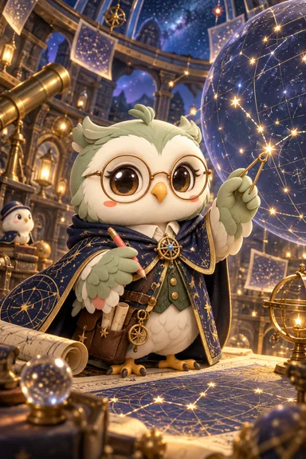

기존 굿즈 참고 이미지 · 최종 영상 아님잊힌 별길의 지도 제작자
내가 이은 첫 번째 별자리
전체를 살피고 연결을 차근차근 완성하는 지도 제작자
남색 금실 망토를 입은 루미와 천문대의 기울어진 별 지도. 루미의 얼굴과 지도 끝이 함께 보이는 사선 구도.
- 0~2초: 끊어진 별길을 눈으로 따라가며 마지막 빈칸을 발견한다.
- 2~6초: 작은 자로 마지막 두 별을 잇자 연결선이 순서대로 밝혀진다.
- 6~9초: 완성된 별자리가 지도 위로 살짝 떠오르고 루미의 눈에 빛이 비친다.
- 9~10초: 자를 내리고 완성된 지도를 바라보며 작게 웃는다.
“하나씩 이어 보니, 길이 되었어.”
- 소장 전 소개
- 마지막 별 하나를 이으면, 어떤 길이 나타날까요?
- 움직임의 핵심
- 선이 이어지는 순서와 완성된 별자리의 작은 상승
- 제작 검수
- 자와 날개가 합쳐지지 않게 한다. 별자리는 한 개만 완성하고 얼굴 앞을 가리지 않는다.